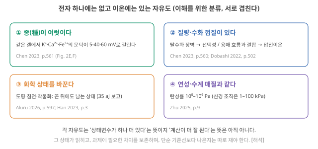
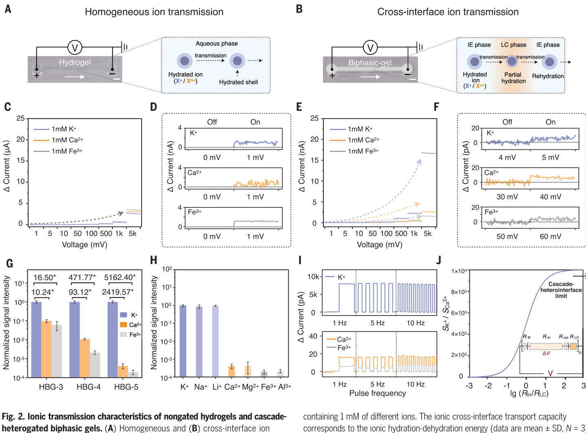
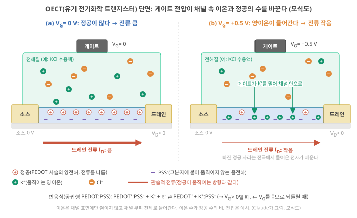
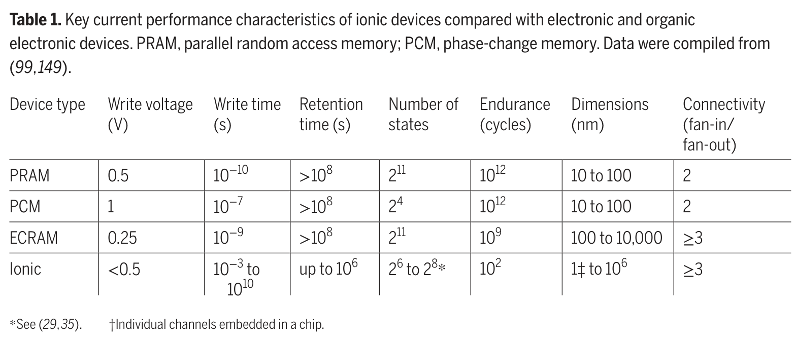
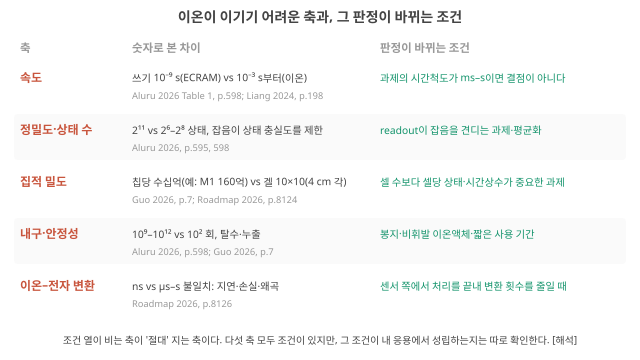
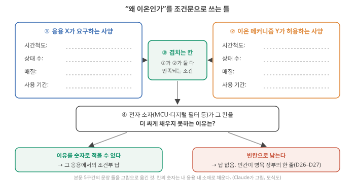

D19. 왜 전자가 아닌 이온인가? 고유한 장점과, 이온이 절대 이길 수 없는 영역은?
Phase 4 · 왜 이온성 고분자인가 · 11월 11일 (수)
답에 들어가야 할 것 — 이동도·확산계수 자릿수 비교, 다종 carrier, 화학 선택성, 연성·수계 환경 호환
기본 경로: ① 사전 테스트(권장) → ② 학습자료(구간마다 잠깐 점검까지) → ③ 백지 회상 → ④ 가르치듯 내 답. ⓪·⑤와 접힌 '심화'·'추가 연습'은 선택입니다. 한 번에 끝낼 필요 없이 구간 단위로 나눠 읽어도 되고, 다시 열면 '지난번 읽던 곳' 링크가 뜹니다.
① 사전 테스트와 먼저 만들어 보기
아직 배우지 않은 내용을 먼저 풀어 봅니다. 많이 틀리는 것이 정상이고, 그게 목적입니다. 먼저 답해 본 문제는 읽을 때 눈에 들어오고 더 오래 남습니다. 문제마다 정답만 보이고, 이유는 학습자료와 ⑤ 다시 풀기에서 봅니다. 다 풀면 학습자료가 열립니다. 건너뛰려면 학습자료 위의 '그냥 읽기'를 누르세요(권장 단계일 뿐 필수는 아닙니다).
② 학습자료
Phase 4의 첫날입니다. Phase 3까지는 "좋은 물리 reservoir(입력의 흔적을 내부 상태에 담는 물리계, D7 4구간)를 무엇으로 판정하나"를 물었습니다. Phase 4는 그 판정의 재료 쪽 원인으로 내려갑니다. 이온이 어떻게 움직이고, 그 움직임이 어떤 기억과 비선형을 만들고, 그것을 고분자 화학으로 어떻게 바꿀 수 있는지. 오늘은 그 첫 질문, "왜 전자가 아닌 이온인가"입니다.
이 질문에 "생체친화적이다", "저전력이다" 같은 한 줄로 답하면 D30에서 아무것도 결정할 수 없습니다. 그래서 오늘은 전자와 이온을 같은 물리량으로 나란히 놓고, 이온에만 있는 자유도를 세고, 이온이 지는 축을 숫자와 조건으로 적습니다. 다섯 개의 작은 질문으로 갑니다.
- 운반자가 "얼마나 잘 움직이나"를 재는 두 숫자, 이동도와 확산계수는 무엇인가? 전자와 이온은 몇 자릿수 다른가?
- "이온은 느리다"에서 느린 것은 정확히 무엇인가? 신호인가, 상태 변화인가?
- 전자에는 없고 이온에는 있는 자유도는 무엇인가? (여러 종류의 운반자, 화학 선택성, 연성·수계)
- 이온이 이기기 어려운 영역(속도·정밀도·집적 밀도)은 숫자로 얼마나 떨어져 있고, 연구는 지금 어디까지 왔나?
- 그래서 "왜 이온인가"를 어떤 문장으로 써야 정직한가?
이 자료는 이온 뉴로모픽을 정당화하는 글이 아닙니다. 4구간의 표를 채운 뒤 "내 소재가 이길 수 있는 칸이 하나라도 있는가"를 내 답에서 스스로 판단하세요.
1. 운반자의 숫자: 이동도와 확산계수
이 구간을 읽고 나면 확산과 드리프트를 실험실 장면으로 설명하고, 이동도와 확산계수를 아인슈타인 관계로 서로 바꾸며, 결정 실리콘의 전자·물속 이온·고분자 속 이온이 몇 자릿수 다른지 숫자로 말할 수 있다.
전기를 나르는 입자를 운반자(carrier)라고 부릅니다. 구리선과 실리콘 칩에서는 전자가, 소금물과 하이드로겔과 이온겔에서는 이온이 운반자입니다. "이온은 전자보다 느리다"는 말은 누구나 하지만, 얼마나 느린지, 그리고 무엇을 기준으로 느린지는 숫자가 있어야 말할 수 있습니다. 그 숫자가 이동도와 확산계수입니다. 화학공학 수업에서 확산계수는 익숙할 것이고, 이동도는 전기화학에서 한 번쯤 봤을 것입니다. 여기서는 둘을 처음부터 같은 그림 위에 놓습니다.
이동도·확산계수와 자릿수 비교
① 왜 필요한가. 이온 소자의 상태(전도도, 전압)가 바뀌려면 이온이 어디론가 움직여야 합니다. 전극 표면에 모이거나, 접합에서 빠져나가거나, 고분자 속으로 들어가야 하죠. 그 움직임이 얼마나 빠른지가 소자의 응답 시간과 기억 시간을 정합니다(D21). 전자 소자와 비교하려면 두 운반자를 같은 단위로 적어야 합니다.
② 무엇인가: 두 가지 움직임. 운반자가 움직이는 방식은 두 가지입니다(그림 0).
- 확산(diffusion). 물컵에 잉크 한 방울을 떨어뜨리면 아무도 휘젓지 않아도 퍼집니다. 분자 하나하나는 열 때문에 이웃 분자와 부딪히며 아무 방향으로나 움직입니다(그림 0 ① 위). 그런데 많은 곳에서 적은 곳으로 나가는 분자가 그 반대보다 많으니, 알짜로는 농도가 고르게 됩니다(그림 0 ① 아래). 화학공학의 Fick 법칙, 곧 흐름이 농도 기울기에 비례한다는 \(J = -D\,dc/dx\)가 이것이고, 그 비례 상수가 확산계수 \(D\) [m²/s]입니다. 단위가 "넓이 ÷ 시간"인 이유는, 무작위로 앞뒤로 흔들리는 걸음은 서로 상당 부분 상쇄되어 간 거리가 시간이 아니라 시간의 제곱근에 비례하기 때문입니다. 한 방향으로 퍼지는 전형적인 거리는 \(\sqrt{2Dt}\)이고, 100배 오래 기다려도 10배만 더 퍼집니다.
- 드리프트(drift). 소금물에 전극 두 개를 넣고 전압을 걸면, 양이온은 (−) 쪽으로, 음이온은 (+) 쪽으로 끌려갑니다. 이온은 여전히 열 때문에 무작위로 흔들리지만, 그 흔들림 위에 전기장이 늘 한쪽으로 미는 힘이 더해져 평균 위치가 한 방향으로 옮겨 갑니다(그림 0 ②).
- 왜 속도가 일정한가. 전하 \(q\)에 전기장 \(E\)(1 m당 걸린 전압, V/m)가 주는 힘은 \(qE\)입니다. 이온이 움직이면 물 분자와 부딪히는 마찰이 속도에 비례해 \(f\,v\)만큼 반대로 걸립니다(\(f\)는 마찰 계수, 단위 N·s/m: 1 m/s로 끌고 가는 데 드는 힘). 원심분리에서 입자가 곧 일정한 침강 속도에 이르듯, 아주 짧은 시간 안에 두 힘이 같아지고(\(qE = fv\)) 그 뒤로는 속도가 일정합니다: \(v = (q/f)\,E\).
- 이동도의 뜻. 이 비례 상수 \(q/f\)가 이동도 \(\mu\)입니다: \(v = \mu E\). 말로 하면 "전기장 1 V/m가 운반자를 몇 m/s로 끄나"이고, 단위는 (m/s) ÷ (V/m) = m²/(V·s)입니다. 마찰이 작을수록 이동도가 큽니다. 예: \(\mu = 7.7\times10^{-8}\) m²/(V·s)인 이온은 1 V/m에서 초속 \(7.7\times10^{-8}\) m, 100 V/m에서 그 100배로 끌려갑니다(아래 단계 3).
- (같은 영어 단어 drift가 D18에서는 "시간이 지나며 소자 응답이 서서히 변하는 것"을 뜻했습니다. 두 뜻을 섞지 않도록 이 교재에서는 전기장에 끌리는 이동을 드리프트, 시간에 따른 응답 변화를 drift로 적습니다.) 이 교재에서 이 식은 크기끼리의 관계입니다. \(\mu\)는 늘 양수로 두고, 움직이는 방향은 전하의 부호가 정합니다(양이온은 전기장 방향, 음이온은 반대 방향).

③ 둘은 어떻게 이어지나: 아인슈타인 관계. 확산과 드리프트는 같은 마찰 \(f\)를 겪습니다. 드리프트에서는 방금 본 대로 \(\mu = q/f\)입니다. 확산에서는 열이 주는 흔들림의 세기(\(kT\), 입자 하나가 가진 열에너지의 크기)를 마찰이 얼마나 누르느냐가 퍼지는 빠르기를 정해 \(D = kT/f\)입니다. 화학에서 본 스토크스–아인슈타인 식 \(D = kT/(6\pi\eta r)\)이 바로 물속 구형 입자의 마찰 \(f = 6\pi\eta r\)(\(\eta\) 점도, \(r\) 반지름)를 넣은 경우입니다. 두 식을 나누면 \(f\)가 사라지고, 열평형에서 성립하는 아인슈타인 관계가 남습니다.
\[ D = \mu\,\frac{kT}{q} \]
- 왜 지금 필요한가: 전자 쪽 문헌은 보통 \(\mu\)를, 이온 쪽 문헌은 보통 \(D\)를 보고합니다. 이 식이 있어야 둘을 같은 축에 놓을 수 있습니다.
- 기호: \(k\)는 볼츠만 상수(1.38×10⁻²³ J/K), \(T\)는 절대온도, \(q\)는 운반자 하나의 전하(1가 이온·전자는 1.6×10⁻¹⁹ C). 2가 이온이면 \(q\)가 두 배입니다.
- 단위: \(kT/q\)는 전압 단위이고 300 K에서 25.8 mV입니다. "열 때문에 흔들리는 에너지를 전하 하나당 전압으로 적은 값"이라 열전압이라 부릅니다(D1 1-2절에서 문턱 아래 전류의 기울기를 정한 그 값). 단위를 따라가면 (m²/(V·s)) × V = m²/s로 \(D\)의 단위가 됩니다.
- 계산 순서: \(\mu\)를 알면 25.8 mV(= 0.0258 V)를 곱해 \(D\)를, \(D\)를 알면 0.0258로 나눠 \(\mu\)를 얻는다.
- 결과의 뜻: 이동도와 확산계수는 같은 "움직이기 쉬움"을 두 방식으로 잰 것이다.
심화 · \(D = \mu kT/q\)를 한 줄씩 유도하기: 평형에서 두 흐름이 비기는 조건
전해질 기둥에 전기장 \(E\)가 \(+x\) 방향으로 걸려 있고, 전류가 흐르지 않는 평형을 생각합니다(1가 양이온, 농도 \(n(x)\)).
- 드리프트는 양이온을 \(+x\)로 보냅니다. 단위 면적·단위 시간당 흐름은 \(n\mu E\).
- 그렇게 \(+x\) 쪽에 이온이 쌓이면 농도 차가 생기고, 확산이 반대로 \(-D\,dn/dx\)만큼 돌려보냅니다.
- 평형이면 둘이 비깁니다: \(D\,dn/dx = n\mu E\).
- 한편 평형의 농도는 볼츠만 분포를 따릅니다(D1 1-2절에서 장벽을 넘는 전자 수를 정한 그 분포). 양이온의 전기적 위치에너지는 \(+x\)로 갈수록 \(qEx\)만큼 낮아지므로 \(n \propto e^{qEx/kT}\)이고, 미분하면 \(dn/dx = n\,qE/kT\).
- 3에 넣으면 \(D\,n\,qE/kT = n\mu E\), 곧 \(D = \mu kT/q\).
숫자로 확인하기. 이 관계가 실제 표의 숫자와 맞는지 두 운반자로 확인합니다.
- 결정 Si의 전자: 물성표의 이동도 1400 cm²/(V·s)에 0.02585 V를 곱하면 36.2 cm²/s이고, 같은 표에 실린 전자 확산계수 36 cm²/s와 맞습니다. Ioffe NSM (Si)
- 물속 K⁺: 전기화학에서 익숙한 극한 몰전도도 \(\lambda^\circ\)(K⁺) = 73.5 S·cm²/mol(25 °C, 무한 희석)에서 출발합니다. 몰전도도는 "전도도 ÷ 몰농도", 곧 이온 1 mol/m³당 내는 전도도이므로 이동도와 \(\lambda = |z|F\mu\)로 이어집니다(\(F\) = 96,485 C/mol은 1 mol의 전하). (1) 단위 맞추기: 73.5 S·cm²/mol = 73.5×10⁻⁴ S·m²/mol. (2) \(\mu = \lambda/F = 73.5\times10^{-4} \div 96485 = 7.62\times10^{-8}\) m²/(V·s)(S·m²/C = (A/V)·m²/(A·s) = m²/(V·s)). (3) 25 °C의 열전압 0.02569 V를 곱하면 \(D = 1.96\times10^{-9}\) m²/s. 표에 실린 K⁺의 확산계수도 1.96×10⁻⁹ m²/s입니다. 전기화학 교재의 네른스트–아인슈타인 식 \(D = RT\lambda/(z^2F^2)\)은 같은 관계를 1 mol 단위로 적은 것입니다(입자 하나 대신 1 mol로 세면 \(k \to R\), \(q \to F\)이고 \(kT/q = RT/F\)). 단, 이런 표의 무한 희석 \(D\)는 몰전도도에서 바로 이 관계로 계산해 싣는 경우가 많아, 이 대조는 독립 실험의 증명이라기보다 단위와 환산의 확인입니다. (폴더 밖: 몰전도도 Wikipedia "Molar conductivity", 확산계수 aqion 표)
④ 작은 숫자로 따라가기.
단계 1 — 물속 K⁺의 확산. 묽은 수용액 속 K⁺·Cl⁻의 확산계수는 약 \(2\times10^{-9}\) m²/s입니다. Zhang 2024가 소자의 시간척도를 어림할 때 "벌크 용액 값"으로 가정한 숫자입니다. Zhang 2024 (ACS Nano), p.15029 1초 동안 퍼지는 거리는 \(\sqrt{2 \times 2\times10^{-9} \times 1} = 6.3\times10^{-5}\) m = 63 µm, 100초면 0.63 mm, 1시간이면 3.8 mm입니다. 시간이 100배가 되어도 거리는 10배밖에 늘지 않습니다.
단계 2 — 확산계수를 이동도로. 아인슈타인 관계를 거꾸로 씁니다. \(\mu = D \div 0.0258 = 2\times10^{-9} \div 0.0258 = 7.7\times10^{-8}\) m²/(V·s). 단위도 같이 나눕니다: (m²/s) ÷ V = m²/(V·s).
단계 3 — 드리프트 속도. 1 cm 간격의 전극에 1 V를 걸면 전기장은 \(E = 1\ \text{V} \div 0.01\ \text{m} = 100\) V/m. K⁺의 속도는 \(v = 7.7\times10^{-8} \times 100 = 7.7\times10^{-6}\) m/s = 7.7 µm/s. 1초에 머리카락 굵기의 약 10분의 1을 갑니다.
단계 4 — 같은 전기장 속 전자. 결정 실리콘 속 전자의 이동도는 물성표에 약 1400 cm²/(V·s)로 실려 있습니다(300 K, 불순물이 적을 때의 값. 불순물을 많이 넣을수록 작아집니다) Ioffe NSM (Si). 반도체 표는 길이를 cm로 적으므로 m로 바꿉니다: 1 cm = 10⁻² m이니 1 cm² = 10⁻⁴ m², 따라서 1400 cm²/(V·s) = 1400 × 10⁻⁴ = 0.14 m²/(V·s). 실리콘 막대에 같은 100 V/m를 건다면 \(v = 0.14 \times 100 = 14\) m/s이고, 방향은 K⁺와 반대입니다(전자는 음전하라 (+)극 쪽으로). 크기로 이온보다 약 180만 배 빠릅니다. 확산계수로 바꾸면 \(D = 0.14 \times 0.0258 = 3.6\times10^{-3}\) m²/s이고, 물속 이온(\(2\times10^{-9}\))과의 비도 같은 \(1.8\times10^{6}\)입니다.
단계 5 — 고분자 속 이온. 용매가 없는 폴리전해질과 이온성 탄성체의 이온전도도는 보통 \(10^{-5}\)–\(10^{-2}\) S/m이고, 이온의 움직임이 사슬의 분절 운동(사슬 일부가 꿈틀거리는 운동)에 크게 기댄다고 Zhu 리뷰는 씁니다. Zhu 2025, p.10 전도도 \(\sigma\) [S/m]는 "움직이는 운반자 수 × 하나의 전하 × 하나의 이동도", 곧 \(\sigma = n\,q\,\mu\)입니다(전기화학의 \(\kappa = \sum |z_i| F c_i u_i\)를 개수 단위로 적은 것). 그래서 전도도에서 \(D\)로 가려면 움직이는 이온의 수 \(n\)이 필요합니다(D23에서 자세히). 1 mol/L의 1가 이온이 모두 움직인다고 가정하고 세 걸음으로 갑니다. ① \(n\): 1 mol/L = 1000 mol/m³(1 m³ = 1000 L)이고, 여기에 아보가드로 수 6.02×10²³을 곱해 \(6.0\times10^{26}\) 개/m³. ② \(\mu = \sigma/(nq) = 10^{-5} \div (6.0\times10^{26} \times 1.6\times10^{-19}) = 1.0\times10^{-13}\) m²/(V·s)(σ = 10⁻² S/m이면 \(1.0\times10^{-10}\)). ③ \(D = \mu \times 0.0258 \approx 2.7\times10^{-15}\)–\(2.7\times10^{-12}\) m²/s [해석: 농도 가정에 따른 환산]. 실제로 움직이는 이온이 그보다 적으면 같은 전도도를 적은 이온이 내야 하므로 \(D\)는 그만큼 커집니다. 물속보다 3–6자릿수 작습니다.
⑤ 이름과 정확한 뜻, 그리고 같은 식이 숨기는 차이. 확산계수 \(D\)는 "농도 차가 있을 때 얼마나 빨리 고르게 되나", 이동도 \(\mu\)는 "전기장에 얼마나 잘 끌려가나"입니다. 둘을 같은 식(\(v = \mu E\), \(D = \mu kT/q\))으로 적을 수 있다고 해서 전자와 이온이 같은 원리로 움직이는 것은 아닙니다. 물속 이온은 물 분자를 수화 껍질로 두르고 이웃 분자와 부딪히며 밀려가는 질량이 있는 입자이고, 그 마찰은 용매의 점도와 이온의 크기가 정합니다. 결정 속 전자는 원자 격자를 거의 막힘없이 지나가는 파동에 가깝고, 이동도는 격자 진동이나 불순물에 흩어지는 빈도가 정합니다 [해석: 일반 물리 지식]. 그리고 결정적으로, 이온이 움직이면 그 자리의 화학 조성이 바뀝니다(어느 쪽은 염이 진해지고 어느 쪽은 묽어진다). 전자가 금속선을 흘러도 구리는 구리입니다. 3구간의 "이온에만 있는 자유도"는 모두 이 차이에서 나옵니다.
왜 10⁶배나 차이 나나: 마찰 계수로 비교. ②에서 \(\mu = q/f\)였으니, 이동도의 차이는 곧 마찰 계수의 차이입니다. 전하는 둘 다 \(1.6\times10^{-19}\) C로 같습니다.
| 물속 K⁺ | 결정 Si의 전자 | |
|---|---|---|
| 이동도 \(\mu\) | \(7.7\times10^{-8}\) m²/(V·s) | 0.14 m²/(V·s) |
| 마찰 계수 \(f = q/\mu\) (1 m/s로 끄는 데 드는 힘) | \(2.1\times10^{-12}\) N·s/m | \(1.1\times10^{-18}\) N·s/m |
| 질량 | \(6.5\times10^{-26}\) kg (K 원자 하나) | \(2.4\times10^{-31}\) kg (유효질량 0.26 \(m_0\)) |
| 마찰의 기원 | 물의 점성. 스토크스 마찰 \(6\pi\eta r\)에 물의 점도 0.89 mPa·s, K⁺의 유효 반지름 약 0.125 nm를 넣으면 \(2.1\times10^{-12}\) | 격자 진동·불순물에 의한 산란. 평균 약 0.2 ps마다 운동 방향을 잃는다 |
전자 쪽 숫자를 읽는 법: 결정 속 전자는 원자 하나하나와 부딪히지 않고 규칙적인 격자를 파동처럼 지나가며, 격자가 열로 흔들리거나 불순물이 있을 때만 흩어집니다. 그 사이에 전기장이 전자를 가속하는 정도를 질량처럼 적은 것이 유효질량 \(m^*\)(실리콘 전자는 자유 전자 질량 \(m_0\)의 0.26배)이고, 이동도는 \(\mu = q\tau/m^*\)로 쓸 수 있습니다(\(\tau\)는 흩어지기까지의 평균 시간). 거꾸로 풀면 \(\tau = \mu m^*/q = 0.14 \times 2.4\times10^{-31} \div 1.6\times10^{-19} \approx 0.2\) ps입니다. 같은 방식으로 이온이 "속도를 잊는 시간" \(m/f\)를 구하면 약 0.03 ps(31 fs)입니다. 정리하면 \(1.8\times10^{6}\)배 가운데 약 \(2.7\times10^{5}\)배는 질량에서, 나머지 약 7배는 이온이 물 분자에 더 자주 막힌다는 데서 옵니다(Claude 계산) [해석: 드루드 모형식 어림. 이온의 \(m/f\)는 액체 속 브라운 운동의 속도 이완 시간이고, 전자의 유효질량은 양자역학적 개념이라 같은 식으로 적었을 뿐 같은 물리가 아니다]. K⁺의 유효(스토크스) 반지름 0.125 nm는 확산계수에서 거꾸로 구해 흔히 인용되는 값이라 독립적인 예측은 아닙니다 [미확인: 원 출처 미대조]. 유효질량 0.26 \(m_0\)는 반도체 교재의 표준값입니다.
⑥ 뉴로모픽·RC와의 연결. 이온 소자의 상태가 바뀌려면 이온이 어떤 길이 \(L\)을 움직여야 합니다. 확산으로 \(L\)만큼 퍼지는 데 걸리는 시간은 \(\sqrt{2Dt} = L\)을 거꾸로 풀어 \(t \approx L^2/(2D)\), 즉 \(L^2/D\)의 자릿수입니다. 오늘은 이 감각만 가져가고, D21에서 이 식을 주인공으로 다룹니다.
⑦ 짧은 확인. 이동도가 10배인 운반자는 확산계수도 10배인가요? (답: 같은 온도·같은 전하라면 그렇다. \(D = \mu \times 0.0258\)에서 비례 상수가 같다.)
이제 숫자를 한 줄에 놓아 봅니다(그림 1). 가로축은 로그 눈금(같은 간격이 같은 배수, D1 기초)이고, 눈금 한 칸이 100배입니다.

Wang 2025 리뷰는 물·하이드로겔 속 이온의 확산계수를 \(10^{-10}\)–\(10^{-8}\) m²/s로 적습니다. Wang 2025 (Chem. Soc. Rev.), p.315 같은 리뷰는 겔 속 \(D\)가 순수 용매 속과 다르며, 이온 크기와 용매 점도가 클수록 작아지고 온도가 높을수록 커질 뿐 아니라, 고분자망의 입체 장애와 이온–고분자 상용성에도 좌우되어 망이 촘촘할수록 \(D\)가 줄어든다고 씁니다. Wang 2025 (Chem. Soc. Rev.), p.305 이 문장이 D22(고분자 화학구조 → 계산 특성)의 출발점입니다.
적용 조건. (1) 아인슈타인 관계는 묽은 계·열평형에서 성립합니다. Wang 2025는 이온 농도가 높은 이온겔과 polyionic elastomer에서는 이온끼리, 이온과 고분자망 사이의 상호작용이 커져 기본 PNP 이론(이온의 확산·드리프트를 함께 푸는 식)의 정확도가 떨어지고, 활동도 계수나 농도에 따라 바뀌는 유전율 같은 보정이 필요하다고 씁니다. Wang 2025 (Chem. Soc. Rev.), p.305 그런 계에서는 측정한 전도도·\(D\)·\(\mu\)가 위 식대로 단순 비례하지 않습니다(D23). (2) 1400 cm²/(V·s)는 결정 실리콘 덩어리의 값이고, 유기 반도체(탄소 사슬로 된 고분자·분자 반도체)의 정공·전자 이동도는 그보다 몇 자릿수 낮습니다 [미확인: 값의 범위]. 이온트로닉스에서 자주 만나는 OECT(유기 전기화학 트랜지스터)의 채널이 바로 이런 고분자입니다. OECT의 생김새와 동작은 3-3절의 기초 상자에서 그림으로 봅니다. 즉 "전자 vs 이온"의 간격은 어느 전자 소재와 비교하느냐에 따라 크게 달라집니다.
- 열전압 \(kT/q\) = 25.8 mV (300 K)
- 전자(결정 Si): \(\mu \approx 0.14\) m²/(V·s) → \(D \approx 3.6\times10^{-3}\) m²/s(같은 물성표의 확산계수 36 cm²/s와 일치) Ioffe NSM (Si)
- 이온(묽은 수용액): \(D \approx 2\times10^{-9}\) m²/s → \(\mu \approx 7.7\times10^{-8}\) m²/(V·s) Zhang 2024 (ACS Nano), p.15029 (환산은 Claude)
- 확인(K⁺, 25 °C): 몰전도도 73.5 S·cm²/mol → \(\mu = \lambda/F = 7.6\times10^{-8}\) m²/(V·s) → \(D = 1.96\times10^{-9}\) m²/s(표값과 같음, 폴더 밖 표)
- 마찰 계수 \(f = q/\mu\): K⁺ \(2.1\times10^{-12}\), Si 전자 \(1.1\times10^{-18}\) N·s/m. 차이의 대부분은 질량(약 \(2.7\times10^{5}\)배)
- 이온(물·하이드로겔 범위): \(10^{-10}\)–\(10^{-8}\) m²/s Wang 2025 (Chem. Soc. Rev.), p.315
- 이온전도도(무용매 폴리전해질·이온성 탄성체): \(10^{-5}\)–\(10^{-2}\) S/m Zhu 2025, p.10 → \(D \approx 10^{-15}\)–\(10^{-12}\) m²/s (1 mol/L 가정의 환산) 해석
이제 이 자릿수를 시간으로 바꿔 봅니다. 길이 \(L\)의 소자 양 끝에 전압 \(V\)를 걸면 전기장은 \(E = V/L\)이고, 운반자가 끝에서 끝까지 끌려가는 시간은 "거리 ÷ 속도"이므로
\[ t = \frac{L}{v} = \frac{L}{\mu E} = \frac{L^{2}}{\mu V} \]
입니다. \(L\)이 두 번 들어가는 이유는 둘입니다. 가야 할 거리가 \(L\)에 비례해 늘고, 같은 전압이 더 긴 거리에 나뉘어 걸려 전기장(곧 속도)이 \(L\)에 반비례해 약해집니다. 1 V에서 물속 이온(\(\mu = 7.7\times10^{-8}\))이 1 mm를 건너는 데 \(10^{-6} \div (7.7\times10^{-8} \times 1) \approx\) 13 s, 1 µm를 건너는 데 \(10^{-12} \div 7.7\times10^{-8} \approx\) 13 µs가 걸립니다. 실리콘 전자는 1 µm를 약 7 ps에 건넙니다(그림 2). 같은 이온이라도 소자가 1 mm에서 1 µm로 작아지면 시간은 \(10^{6}\)분의 1이 됩니다. 이온이 "느린" 까닭의 한쪽은 \(\mu\)(재료)이고, 다른 쪽은 \(L^{2}\)(크기)입니다. 어느 쪽이 더 큰 몫인지는 D21의 질문입니다.
속도와 크기에 주는 뜻. 이동도가 \(1.8\times10^{6}\)배 작은 운반자로 같은 전압에서 같은 시간 안에 건너려면 \(L\)을 \(\sqrt{1.8\times10^{6}} \approx 1300\)배 줄여야 합니다. 그림 2에서 실리콘 전자가 1 mm를 건너는 시간(약 7 µs)과 물속 이온이 1 µm를 건너는 시간(약 13 µs)이 같은 자릿수인 것이 그 예입니다(Claude 계산). 이온 소자를 빠르게 하는 가장 강한 손잡이가 '작게 만들기'이고, 반대로 이온 소자를 cm–mm 크기로 만들면 초–분 단위의 느린 상태 변화가 자연스럽게 나온다는 뜻입니다.

물속 이온이 1 µm를 퍼지는 데(확산, \(t \approx L^2/(2D)\)) 걸리는 시간은 얼마일까요? 위 그림의 드리프트 시간(13 µs, 1 V)과 비교해 먼저 어림해 보세요. 아래 점검의 첫 문제는 풀이 예시, 둘째는 일부가 채워져 있고, 셋째는 혼자 풉니다.
내 polyelectrolyte heterojunction에서 이온이 움직여야 하는 길이는 얼마쯤인가요? 접합 두께, 전극 사이 거리, 이온이 빠져나간 층(depletion층)의 폭 가운데 무엇이 "그 소자의 \(L\)"일까요? 그 \(L\)과 내가 쓰는 전해질의 \(D\)로 \(L^{2}/D\)를 머릿속으로 계산해, 측정한 응답 시간과 같은 자릿수인지 보세요. 다르다면 그 차이가 오늘 '아직 모르는 것'의 첫 줄입니다.
- 운반자 (carrier)
- 전하를 실어 나르는 입자. 금속·반도체에서는 전자(와 정공), 전해질·겔에서는 이온.
- 확산 / 확산계수 \(D\)
- 농도 차 때문에 저절로 퍼지는 움직임 / 그 빠르기 [m²/s]. 퍼지는 거리 ~ √(2Dt).
- 드리프트 / 이동도 \(\mu\)
- 전기장에 끌려가는 일정한 속도의 움직임 / 속도 ÷ 전기장 [m²/(V·s)]. 마찰 계수 \(f\)로 쓰면 \(\mu = q/f\).
- 마찰 계수 \(f\)
- 운반자를 1 m/s로 끌고 가는 데 드는 힘 [N·s/m]. 물속 이온은 점성(스토크스 \(6\pi\eta r\)), 결정 속 전자는 산란(유효질량 ÷ 산란 시간)이 정한다.
- 아인슈타인 관계
- D = µ·kT/q. 묽은 계·열평형에서 확산과 드리프트를 잇는다. 300 K에서 kT/q = 25.8 mV(열전압).
- 정의: 확산계수(저절로 퍼지기)와 이동도(전기장에 끌려가기)는 같은 "움직이기 쉬움"을 두 방식으로 잰 것이고, 아인슈타인 관계 \(D = \mu kT/q\)로 이어진다(묽은 계·열평형 조건).
- 숫자: 결정 Si 전자 \(3.6\times10^{-3}\) Ioffe NSM (Si) vs 수용액 이온 \(2\times10^{-9}\) m²/s, 약 \(1.8\times10^{6}\)배. 무용매 고분자 속 이온은 3–6자릿수 더 작을 수 있다 Zhu 2025, p.10 해석.
- 같은 식으로 적어도 원리는 다르다: 이온은 수화 껍질을 두른 입자이고, 움직이면 그 자리의 조성이 바뀐다. \(\mu = q/f\)로 보면 10⁶배 차이의 대부분은 질량(약 2.7×10⁵배), 나머지는 마찰이다.
- 건너는 시간 \(t = L^{2}/(\mu V)\): 느림의 한쪽은 재료(\(\mu\)), 다른 쪽은 크기(\(L^{2}\)). 같은 시간을 맞추려면 이온 소자는 약 1000배 작아야 한다(Si 전자 1 mm ≈ 이온 1 µm). → D21.
2. 느린 것은 신호가 아니라 '상태'다
이 구간을 읽고 나면 이온 전도체에서 "전기 신호가 전달되는 빠르기"와 "이온이 실제로 이동하는 빠르기"가 다른 양임을 ionic cable의 숫자로 보이고, 이온 소자에서 느린 것이 무엇인지 한 문장으로 말할 수 있다.
1구간의 숫자를 보면 "이온 소자는 전기 신호도 느리게 보내겠구나"라고 생각하기 쉽습니다. 그렇지 않습니다. 이 구분이 오늘 가장 중요한 한 줄입니다.
직관 하나. 물이 가득 찬 긴 호스의 한쪽 끝을 누르면, 반대쪽 끝에서 거의 동시에 물이 나옵니다. 내가 누른 그 물 분자가 호스 끝까지 달려간 것이 아니라, 호스 안의 물이 한꺼번에 조금씩 밀린 것입니다. 전선 속 전자도, 이온 전도체 속 이온도 마찬가지입니다. 신호(밀림)는 빠르게 퍼지고, 운반자 하나하나는 거의 제자리에서 조금 움직일 뿐입니다. 비유가 깨지는 곳: 물은 압력파로 밀림을 전하지만, 이온 전도체에서는 전하가 쌓이고 빠지는 저항–축전기 회로의 방식으로 전합니다(아래).
ionic cable. Suo 그룹은 LiCl 하이드로겔 두 가닥 사이에 얇은 유전체 탄성체를 끼운 전송선을 만들었습니다. 겔과 전극이 만나는 면, 그리고 겔과 유전체가 만나는 면에는 이온이 한 겹 늘어선 아주 얇은 층이 생겨 축전기처럼 동작합니다(이 층이 전기이중층이며 D20에서 자세히 봅니다). 그래서 케이블의 짧은 토막 하나하나가 "저항(겔) + 축전기(유전체)"이고, 이 토막들이 길게 이어진 선을 따라 전압 파형이 확산 방정식처럼 퍼집니다. 원 논문은 신호의 확산계수를 \(D = 1/(rc) \approx bd/(\rho\varepsilon)\)로 적습니다. 여기서 \(b\)와 \(\rho\)는 이온 전도체의 두께와 저항률, \(d\)와 \(\varepsilon\)은 유전체의 두께와 유전율이고, \(r\)·\(c\)는 길이당 저항·정전용량입니다. Yang 2015, p.60 왜 '확산계수' 꼴이 되는지는 D16 기초의 RC 회로로 볼 수 있습니다. 저항 \(R\)을 거쳐 커패시터 \(C\)를 충전하는 시간은 \(\tau = RC\)입니다. 길이 \(L\)의 케이블은 전체 저항 \(rL\), 전체 정전용량 \(cL\)을 가지므로 끝까지 충전되는 시간이 \(\tau \approx (rL)(cL) = rc\,L^{2}\), 곧 1구간의 \(L^{2}/D\)와 같은 꼴이고 \(D = 1/(rc)\)입니다(단위: \(r\) [Ω/m] × \(c\) [F/m] = s/m², 그 역수가 m²/s) 해석. 여기서 '확산'하는 것은 이온이 아니라 전압 파형입니다. Wang 2025는 전형적인 소자에서 이 값이 \(10^{7}\) m²/s에 이르러 물·하이드로겔 속 이온의 확산계수(\(10^{-10}\)–\(10^{-8}\) m²/s)보다 훨씬 크다고 정리합니다. Wang 2025 (Chem. Soc. Rev.), p.315 원 논문은 신호의 확산계수가 이온보다 약 16자릿수 크고, 100 MHz 신호를 10 cm 전송했다고 보고합니다. Yang 2015, p.59
작은 예시. 같은 \(t \approx L^{2}/D\) 어림으로 10 cm를 "건너는" 시간을 비교합니다.
- 신호: \(0.1^2 \div 10^{7} = 10^{-9}\) s
- 이온 자체: \(0.1^2 \div (2\times10^{-9}) = 5\times10^{6}\) s ≈ 58일
열다섯 자릿수가 넘게 다릅니다(그림 3).

그러면 이온 소자가 느리다는 말은 무엇인가. Roadmap은 전자 소자의 전하 수송이 전형적으로 ns 시간척도인 반면 이온 이동은 µs에서 s에 걸친다고 쓰고, 이 불일치가 이온–전자 변환에서 지연·에너지 손실·신호 왜곡을 만든다고 지적합니다. Roadmap 2026, p.8126 여기서 느린 것은 상태를 바꾸는 과정입니다. 농도 분포를 다시 배치하거나(이온이 한쪽에 쌓이고 다른 쪽에서 빠지는 것), 고분자 속으로 이온을 집어넣거나(도핑), 계면의 얇은 이온층을 충전하는 과정입니다. 전기 신호를 보내는 과정이 아닙니다. 해석
이 구분이 왜 중요한가. D1 4절에서 "이온 이완은 crossbar(가중치를 소자의 전도도로 저장해 곱셈·덧셈을 한 번에 하는 격자, D4 2구간) 같은 저장형 계산에서는 오차, RC에서는 자원"이라고 했습니다(D1 4절). 그 '이완'은 바로 이 상태 변화의 시간입니다. 상태 변화가 느리다는 것은, 소자가 과거 입력의 흔적을 그만큼 오래 들고 있다는 말과 같습니다(D9의 fading memory, 즉 과거 입력의 영향이 서서히 줄어드는 성질, D9 기초). 느림을 결점으로 볼지 자원으로 볼지는 과제의 시간척도가 정합니다(D13 기초: 시간척도의 정합). 그리고 신호 전달 자체는 느리지 않으므로, "이온이라서 실시간 처리가 안 된다"는 말은 조건 없이 쓰면 틀립니다. 해석
"이온은 느리니까 이온 소자의 모든 것이 느리다" — 자주 섞이는 두 '느림'입니다. 이온의 \(D\)가 작다는 것은 상태(농도·도핑)를 바꾸는 시간이 길다는 뜻이고, 전기 신호의 전파는 겔의 저항률과 유전체의 유전율·두께가 정합니다 Yang 2015, p.60. 그리고 상태 변화의 시간도 재료만이 아니라 \(L^{2}\)가 함께 정합니다(1구간). "느리다"라고 쓸 때는 무엇이, 어느 길이에서, 어느 과제에 비해 느린지를 붙이세요.
내 ionic diode에 전압을 바꿔 걸었을 때 전류가 새 값에 자리 잡는 데 걸리는 시간(수 초?)과, 같은 소자에 작은 교류를 걸어 재는 임피던스 측정에서 고주파 쪽에 보이는 빠른 응답은 서로 다른 '느림'을 보고 있습니다. 각각 그림 3의 어느 쪽(상태 변화 / 신호 전달)에 가까운가요?
- ionic cable의 신호 확산계수는 \(\sim10^{7}\) m²/s, 이온은 \(10^{-10}\)–\(10^{-8}\) m²/s Wang 2025 (Chem. Soc. Rev.), p.315. 원 논문: 약 16자릿수 차이, 100 MHz를 10 cm 전송 Yang 2015, p.59. 신호 전달은 느리지 않다.
- 느린 것은 상태 변화(농도 재배치·도핑·계면 충전). 이온 이동 µs–s vs 전자 ns Roadmap 2026, p.8126.
- 상태 변화가 느림 = 과거 입력의 흔적이 오래 남음. 결점인지 자원인지는 과제의 시간척도가 정한다 해석.
3. 전자에는 없고 이온에는 있는 자유도
이 구간을 읽고 나면 이온에만 있는 네 가지 자유도(여러 종, 수화 껍질과 선택성, 화학 상태, 연성·수계 매질)를 폴더 논문의 숫자 하나씩과 함께 말하고, 각각이 "상태변수 하나 더"인지 "계산 자원"인지 구분할 수 있다.
전자는 종류가 하나이고, 질량이 아주 작고, 지나가도 물질의 화학 결합을 바꾸지 않습니다. 이온은 셋 다 반대입니다. 아래 네 가지는 이해를 위한 분류이며 서로 겹칩니다. 각 항목에서 "이것이 상태변수를 하나 더 준다"는 것과 "그래서 계산이 더 잘 된다"는 것을 구분해 읽으세요. 여기서 상태변수란 소자 안에서 바뀌고, 바뀐 채로 얼마간 남아 다음 응답에 영향을 주는 양(농도 분포, 도핑 정도, 침전의 양 등)입니다(D8 기초: 내부 상태에서 reservoir의 상태가 "입력 이력이 남긴 숫자 목록"이었던 것을 떠올리세요). 앞의 것은 폴더 원문이 보여 주고, 뒤의 것은 Phase 3의 기준(읽을 수 있는 상태, 새 데이터, 기준선, D16 기초)으로 따로 검증해야 합니다. 해석

3-1. 종(種)이 여럿이다: 화학적 정체성이 입력이 될 수 있다
전자 회로에서 "어떤 전자인가"는 의미가 없지만, 이온 회로에서는 K⁺와 Ca²⁺가 다른 신호일 수 있습니다. Chen 2023(Science)은 친수 상과 친유 상이 미세하게 갈라진 겔(상분리 겔)을 만들었습니다. 고른 하이드로겔에서는 1 mM K⁺·Ca²⁺·Fe³⁺가 모두 비슷한 전압 문턱(모두 약 1 mV)에서 전류를 흘려 이온을 구별하지 못했지만 Chen 2023, p.560, 상분리 겔에서는 문턱이 K⁺ 5 mV, Ca²⁺ 40 mV, Fe³⁺ 60 mV로 갈렸고, 상분리를 더 키운 겔에서 정규화 신호 세기의 비 K⁺/Fe³⁺가 5162까지 올라갔습니다(고른 겔은 2.19). Chen 2023, p.561 저자들은 그 기원을 이온이 계면을 건널 때 수화 껍질을 일부 벗었다가 다시 입는 데 드는 에너지 장벽의 차이로 설명합니다. 전하 밀도가 큰 이온일수록 물 분자를 강하게 붙잡아 장벽이 높다는 것입니다. Chen 2023, p.560
원문 그림을 읽기 전에. 아래 그림은 위·가운데·아래 세 줄입니다. 위 줄은 두 겔의 실물 사진과 이온이 지나가는 모식도, 가운데 줄은 전압을 올리며 잰 전류, 아래 줄은 이온 종류별 신호 세기입니다. 먼저 가운데 줄의 D와 F만 비교하세요.

여기서 화학 선택성이라는 말을 정해 둡니다. 같은 전압을 걸어도 이온의 종류에 따라 통과하는 정도가 다르게 만드는 성질입니다. 전자 소자에는 이 축이 없습니다.
그러나 Aluru 리뷰는 같은 전하를 가진 다른 이온들 사이에서 한 종류만 통과시키는 선택성을 얻기가 어렵고, "화학적으로 특정한 신호로 하는 이온 정보처리는 아직 초기 단계"라고 씁니다. Aluru 2026, p.593 종별 전류를 따로 재는 새 실험법이 필요하다는 것도 공백으로 꼽습니다. Aluru 2026, p.595 즉 '여러 종의 운반자'는 자유도이지, 아직 계산 자원으로 입증된 것은 아닙니다.
3-2. 질량과 수화 껍질이 있다: 용매·힘·열과 직접 결합한다
이온은 용매 분자를 끌고 다니므로 압력·흐름·온도와 직접 이어집니다. Dobashi 2022(Science)의 압전이온(piezoionic) 하이드로겔은 겔을 누르면 기공 속 용매가 흐르고, 그 흐름이 양이온과 음이온을 서로 다르게 실어 날라 전하가 갈리는 원리입니다. Dobashi 2022, p.502 같은 글에서 겔 두께를 1 mm에서 0.2 mm로 줄이면 전류 응답 시간이 약 5 s에서 30 ms로 짧아졌습니다. Dobashi 2022, p.505 단, 이 시간은 이온 하나의 이동이 아니라 겔이 눌렸다가 용매가 빠져나가는 기계적 이완(poroelastic 이완, 크기의 제곱에 비례하는 시간)이 정합니다. Dobashi 2022, p.502 해석 이온 소자의 시간상수(변화가 원래로 돌아가는 빠르기를 나타내는 시간의 척도, D13 기초) 가운데 일부는 이온 확산이 아니라 고분자망의 역학에서 온다는 것, 이것이 D21·D22에서 다시 나옵니다.
Bayley 그룹의 합성 신경은 반대쪽 극단입니다. 나노리터 물방울과 하이드로겔 섬유를 지질 이중막으로 이은 구조에서 신호가 센티미터 거리를 전달되고, 끝에서 신경전달물질을 방출합니다. 저자들은 이 전달 방식이 생체를 그대로 흉내 낸 것이 아닌(non-biomimetic) 기구라고 밝힙니다. Hoskin 2022, p.650 출력이 전압이 아니라 분자의 방출이라는 것, 전자 회로에는 없는 출력 형식입니다.
3-3. 화학 상태를 바꾼다: 도핑·침전·착물화
전자는 반도체에 들어 있는 도핑(전하를 공급하는 불순물의 양)을 바꾸지 못하지만, 이온은 전자와 이온을 함께 나르는 고분자(혼합 전도체) 속에 들어가 도핑 수준 자체를 바꿉니다. Aluru 리뷰는 전통 반도체의 도핑과 달리 전기화학 도핑은 "동적이고 가역적인 과정"이며, 약 300 nm 크기 소자에서 이온 이동으로 아날로그 상태(켜짐/꺼짐 두 값이 아니라 여러 단계로 이어지는 값)를 부호화하는 데 35 aJ(아토줄, \(10^{-18}\) J)까지 낮출 수 있었다는 보고를 인용합니다. Aluru 2026, p.597 35 aJ은 소자 하나의 상태 전환 에너지이고 읽기 회로·주변 회로는 포함하지 않습니다(D17 기초: 시스템 비용). 이 숫자를 '시스템 효율'로 쓰면 안 됩니다. 전기화학 도핑을 가장 직접 쓰는 소자가 OECT입니다.
OECT: 이온이 채널에 드나들며 전류를 바꾸는 트랜지스터
① 무엇을 하려고 필요한가. 전해질 속의 작은 전압 신호로 고분자 채널의 큰 전자 전류를 줄이거나 키우는 장치입니다. 이온 쪽에서 일어난 일을 전자 회로가 읽는 전류로 바꾸고 키워 주는 다리라서, 생체 신호 센서와 시냅스 소자에 널리 쓰입니다 해석.
② 무엇으로 되어 있나(그림 5). D1의 MOSFET처럼 소스·드레인·게이트 세 단자가 있지만 두 곳이 다릅니다.
- 채널이 실리콘이 아니라 혼합 전도체 고분자입니다. 대표인 PEDOT:PSS는 전자를 일부 잃어 양전하(정공, D1 기초)를 띤 전도성 사슬 PEDOT⁺와, 그 양전하의 짝이 되는 음이온 고분자 PSS⁻(설폰산 음이온이 사슬에 붙어 있어 움직이지 않음)가 섞인 막입니다. 정공은 PEDOT 사슬을 따라 움직여 전류를 나르고, 이온은 물을 머금은 막 속을 드나듭니다.
- 게이트와 채널 사이에 산화막(절연체) 대신 전해질이 있습니다. 게이트 전극은 전해질에 잠겨 있고, 전해질은 채널 윗면에 직접 닿습니다.

③ 게이트 전압을 바꾸면 안에서 무엇이 변하나.
게이트에 + 전압을 걸면 전해질의 K⁺와 Cl⁻는 각각 어느 쪽으로 갈까요? 그 결과 채널의 정공 수와 드레인 전류는 늘까요, 줄까요? 먼저 예상한 뒤 단계를 넘기세요.
단계 1 — \(V_G = 0\). 채널은 PEDOT⁺의 정공으로 가득합니다(만들 때 이미 도핑된 상태). 드레인을 소스보다 조금 낮게(예: −0.2 V) 두면 정공이 소스에서 드레인 쪽으로 움직여 큰 전류 \(I_D\)가 흐릅니다(그림 5a). 정공은 양전하이므로 관습적 전류 방향과 이동 방향이 같습니다(D1 기초: 전류 방향).
단계 2 — 게이트에 +0.5 V. 양(+)인 게이트가 전해질의 양이온(K⁺)을 밀어 채널 쪽으로 보냅니다(Cl⁻는 게이트 쪽으로 끌립니다). K⁺는 채널 표면에 쌓이는 데서 그치지 않고 막 부피 전체로 들어가 PSS⁻ 옆에 자리 잡습니다. 그러면 PSS⁻의 음전하를 맞춰 줄 정공이 더는 필요 없어져, 정공은 소스·드레인 전극으로 빠져나갑니다(전극에서 들어온 전자가 PEDOT⁺를 중성 PEDOT⁰로 되돌린다고 봐도 같습니다). 이것이 탈도핑(dedoping)이고, 반응식으로는 PEDOT⁺:PSS⁻ + K⁺ + e⁻ → PEDOT⁰ + K⁺:PSS⁻ [해석: OECT 문헌에서 흔히 쓰는 반응식, 원문 대조 안 함]. 전류를 나를 정공이 줄었으니 \(I_D\)가 작아집니다(그림 5b).
단계 3 — 게이트를 다시 0으로. K⁺가 전해질로 돌아가고 정공이 돌아와 전류가 회복됩니다. 되돌아가는 빠르기는 이온이 막 두께 \(L\)을 오가는 시간, 곧 1구간의 \(L^{2}/D\) 자릿수에 기댑니다. 예: 두께 100 nm, 막 속 이온의 \(D\)를 \(10^{-10}\) m²/s로 가정하면 \((10^{-7})^{2} \div 10^{-10} = 10^{-4}\) s = 0.1 ms [가정값으로 한 Claude의 어림. 실제 응답은 전해질 저항과 채널의 큰 정전용량이 만드는 RC 시간도 함께 정한다].
④ 출력. 0.1 V 단위의 작은 게이트 전압 변화로 드레인 전류가 크게 바뀝니다. 실리콘 MOSFET의 게이트는 산화막을 사이에 두고 채널 표면의 전하만 바꾸지만, OECT에서는 이온이 채널 부피 전체를 도핑·탈도핑하므로 같은 전압에서 바뀌는 전하가 훨씬 많기 때문입니다 [해석: OECT 문헌의 일반적 설명, 원문 대조 안 함]. 실제 PEDOT:PSS OECT 보고에서도 게이트 전압을 0에서 0.6 V로 올리면 드레인 전류가 줄고, 저자들은 이것을 채널의 탈도핑으로, 그리고 양이온이 막 전체의 PEDOT 사슬에 닿을 수 있다는 것으로 설명합니다(Kim et al., Nat. Commun. 2018, 9, 3858, 폴더 밖, 본문 일부만 확인).
⑤ 연구와의 연결. OECT의 상태변수는 "채널 속에 들어간 이온의 양"이고, 이것이 바로 이 절의 전기화학 도핑입니다. 게이트를 끈 뒤에도 이온이 곧바로 빠져나가지 않으면 전류가 이전 입력을 기억합니다(시냅스 소자). PEDOT:PSS처럼 처음부터 도핑된 채널을 양이온으로 끄는 방식을 공핍형(depletion mode), 도핑되지 않은 채널에 (−) 게이트로 음이온을 넣어 정공을 만들며 켜는 방식을 축적형(accumulation mode)이라 하고, 축적형은 D20 4구간에서 봅니다. 채널 속 정공의 이동도는 1구간의 실리콘 전자보다 몇 자릿수 낮다는 점도 함께 기억하세요(1구간 적용 조건).
Han 2023(PNAS)의 하이드로겔 ionic diode는 다른 길을 보여 줍니다. 순방향 전압으로 접합에 이온이 쌓이면 Ba²⁺와 SO₄²⁻가 만나 BaSO₄ 침전이 생기고, 전류가 1,000 s 안에 0.6 µA에서 3 nA(처음의 약 0.5%)로 떨어졌습니다. 저장액을 반응하지 않는 KCl로 바꿔도 낮은 전류가 거의 그대로 유지되었습니다. Han 2023, p.3 침전은 전압을 끈 뒤에도 남는 화학적 상태변수입니다. 폴리전해질 복합체의 착물화·해리도 같은 범주입니다(D20·D24). 다만 이런 상태를 쓰면 가역성·내구성·재현성이 함께 질문이 됩니다. 녹이기 어려운 상태는 오래 남는 대신 되돌리기도 어렵습니다.
3-4. 연성·수계 매질과 같다
Zhu 리뷰는 연성 이온 전도체를 탄성률(얼마나 단단한가, Pa) \(10^{5}\)–\(10^{9}\) Pa의 이온 전도 소재로 정의하고, 이 범위가 신경 조직의 단단함(약 1–100 kPa)을 포함한다고 씁니다. Zhu 2025, p.9 다만 \(10^{5}\) Pa = 100 kPa이므로 지수 표기의 범위는 신경 조직 범위의 위쪽 끝에만 닿고, 같은 문장의 괄호 표기(0.1 kPa–100 MPa)와도 맞지 않습니다. 원문 표기가 서로 어긋나니 이 숫자를 옮길 때는 어느 쪽인지 밝히세요. 해석 몸의 신호도 이온으로 전달되므로, 이온 소자는 변환 없이 같은 언어로 조직과 대화할 가능성이 있습니다(D5에서 본 bio-interface). Lee 2026(AFM)은 히알루론산–키토산 하이드로겔 접합 소자를 쥐 피부 아래에 5일 이식한 뒤 꺼내어 측정했습니다. Lee 2026 (AFM), p.6 몸 안에서 동작하며 계산한 것은 아니라는 점을 함께 적어 두세요. Aluru 리뷰는 이온 컴퓨팅이 적어도 처음에는 CMOS(오늘날 거의 모든 디지털 칩을 만드는 실리콘 회로 방식, D2 기초)와 경쟁하지 말고 뇌–컴퓨터 인터페이스, 환경 모니터링, 농식품처럼 화학·생체 호환이 필요한 응용에 집중하자고 제안합니다. Aluru 2026, 요약면
이 자유도의 반대면은 안정성입니다. 하이드로겔은 마르고, 이온이 새며, 염의 농도 차로 만든 소자는 그 차가 사라집니다. Guo 2026의 하이드로겔 memristor(흐른 전류의 이력에 따라 저항이 바뀌어 그 이력을 기억하는 2단자 소자) 배열은 17시간 동안 측정하며 모든 셀의 전류가 서서히 줄었고(저자는 겔 탈수로 내부 저항이 커진 것으로 봅니다), 한 셀은 기능을 잃었습니다. Guo 2026, p.7 연성·수계는 자원이자 drift의 원천입니다(D18 기초: 편차·잡음·장기 안정성).
네 자유도 중 내 소재(anionic/cationic polyelectrolyte heterojunction, ionogel)가 이미 쓰고 있는 것은 무엇이고, 쓸 수 있지만 안 쓰고 있는 것은 무엇인가요? 예를 들어 heterojunction은 고분자에 고정된 전하로 이온을 가르는 계이고, Chen 2023은 탈수화 장벽으로 가릅니다. 두 장벽은 서로 독립된 설계 변수일까요? 가설
- 상태변수
- 소자 안에서 입력에 따라 바뀌고, 바뀐 채로 얼마간 남아 다음 응답에 영향을 주는 양. 농도 분포, 도핑 정도, 침전량 등.
- 화학 선택성
- 같은 전압에서도 이온 종류에 따라 통과 정도가 다른 성질. 고정 전하, 탈수화 장벽, 특이 결합으로 만든다.
- 수화 껍질 / 탈수화 장벽
- 이온을 둘러싼 물 분자 층 / 그 층을 벗고 다른 상으로 들어갈 때 넘어야 하는 에너지.
- 압전이온 (piezoionic)
- 누르면 용매 흐름이 양·음이온을 다르게 실어 날라 전압이 생기는 현상. 시간상수는 기계적(poroelastic) 이완이 정한다.
- 전기화학 도핑
- 이온이 혼합 전도체 고분자에 들어가 전자적 전하(정공·전자)의 양을 바꾸는 것. 동적·가역적.
- OECT (유기 전기화학 트랜지스터)
- 혼합 전도체 고분자 채널 위에 전해질과 게이트를 둔 트랜지스터. 게이트 전압이 이온을 채널 부피로 넣고 빼 정공(또는 전자) 수, 곧 드레인 전류를 바꾼다. PEDOT:PSS는 + 게이트에서 양이온이 들어가 전류가 주는 공핍형.
- 여러 종: 상분리 겔에서 문턱 5/40/60 mV, 신호비 최대 5162 Chen 2023, p.561. 그러나 단일 이온 선택성과 종별 전류 측정은 아직 공백 Aluru 2026, p.593, 595.
- 수화 껍질·질량: 용매 흐름·압력과 결합. 두께 1 → 0.2 mm에 응답 5 s → 30 ms, 이 시간은 기계적 이완 Dobashi 2022, p.502, 505.
- 화학 상태: 도핑(동적·가역, 35 aJ은 소자만) Aluru 2026, p.597, 침전(끈 뒤에도 남음) Han 2023, p.3.
- 연성·수계: 탄성률 \(10^{5}\)–\(10^{9}\) Pa Zhu 2025, p.9(원문의 괄호 표기 0.1 kPa–100 MPa와 어긋남). 같은 성질이 drift의 원천 Guo 2026, p.7.
- 자유도가 있다 ≠ 계산 자원이다. 뒤의 것은 따로 검증한다 해석.
4. 이온이 이기기 어려운 영역: 숫자와 조건, 그리고 연구 현황
이 구간을 읽고 나면 속도·정밀도(상태 수)·집적 밀도·내구성에서 이온 소자가 전자 소자와 몇 자릿수 떨어져 있는지 원문 표의 숫자로 말하고, 각 축에서 판정이 바뀌는 조건과 지금 연구가 어디까지 왔는지를 적을 수 있다.
"이온이 절대 이길 수 없는 영역"을 적을 때도 슬로건은 금물입니다. 축마다 숫자로 얼마나 지는지, 왜 지는지, 어떤 조건에서 판정이 바뀌는지를 함께 적습니다. 다행히 폴더에 그 숫자를 한 표로 모은 원문이 있습니다.
표를 읽기 전에 낱말 몇 개. 아래 표는 메모리 소자(값을 써 두는 소자) 네 종류를 비교합니다. 쓰기 시간은 상태를 바꾸는 데 걸리는 시간, 유지 시간(retention)은 써 둔 상태가 남는 시간, 상태 수는 구별할 수 있는 단계의 수(\(2^{11}\) = 2048단계, \(2^{6}\) = 64단계), 내구성(endurance)은 고장 없이 쓰고 지울 수 있는 횟수, 크기는 소자 하나의 치수입니다. ECRAM은 이온을 고체 속으로 넣고 빼서 전도도를 바꾸는 전기화학 메모리이고, PCM은 물질의 결정/비정질 상을 바꾸는 메모리입니다(표의 약어 풀이는 원문 그대로 둡니다).

이 표를 축별로 풀어 봅니다. 그림 6은 그 요약입니다.
속도. 쓰기 시간이 ECRAM \(10^{-9}\) s, 이온 소자 \(10^{-3}\) s부터. Aluru 2026, p.598 전자 쪽 RC 예로, 폴더의 강유전체 트랜지스터(전압으로 뒤집어 두면 그대로 남는 전기 분극을 가진 물질을 게이트에 쓴 트랜지스터, 트랜지스터는 D2 기초) reservoir는 100 ns 아래에서 동작한다고 보고합니다. Tang 2022, p.1555 과제가 1초에 수십억 번 박자(클록)를 맞추는 GHz 디지털 연산이라면 이온은 이길 수 없습니다. 그러나 Liang 리뷰는 센서 근처에서 자연 신호와 상호작용하려면 물리 노드가 생물학적 시간척도(1 ms보다 긴)를 가질 수 있어야 하고, 시간상수가 너무 짧으면 실시간 신호와 결합하지 못한다고 씁니다. Liang 2024, p.198 과제의 시간척도가 ms–s이면 '느림'은 결점이 아니라 정합 조건입니다. 이것은 "이온이 빠르다"가 아니라 "그 과제에서는 빠를 필요가 없다"는 뜻이니 그렇게 적으세요.
정밀도(상태 수와 잡음). 상태 수가 \(2^{11}\) 대 \(2^{6}\)–\(2^{8}\)입니다. Aluru 2026, p.598 Aluru 리뷰는 또 확률적 흔들림이 이온계가 아날로그 상태를 얼마나 충실하게 표현할 수 있는지의 근본 한계를 정하고, 그 잡음 수준이 기존 계산이 견디는 수준을 넘는 경우가 많다고 씁니다. Aluru 2026, p.595 실리콘 디지털 계산은 두 상태만 쓰고 그 사이 에너지 장벽이 커서 잡음에 거의 영향받지 않는다는 대비도 같은 리뷰에 있습니다. Aluru 2026, p.596 판정이 바뀌는 조건은 "readout(상태에 가중치를 곱해 더해 답을 내는 학습된 출력, D6 기초 3)이 상태 사이의 차이를 잡음보다 크게 볼 수 있는 과제"입니다(D18 2구간의 차이 대 흔들림 비).
집적 밀도. 실리콘 칩에는 수십억 개의 트랜지스터가 들어갑니다(예: 2020년에 나온 노트북용 Apple M1 칩 160억 개, Apple 발표 자료). 폴더에서 가장 큰 젤 이온 소자 배열의 하나인 Guo 2026은 40 mm × 40 mm 기판 위에 10 × 10 = 100개를 94% 수율로 만들었습니다. Guo 2026, p.2, 7 면적당으로 바꾸면 100 ÷ 16 cm² ≈ 6개/cm²입니다(코드 계산). Roadmap은 신뢰성 있고 선택적인 이온 수송에는 채널 형상의 정밀 제어가 필요하고 원자 크기로 갈수록 어려워지며, 간단한 공정은 구조의 충실도를 희생한다고 씁니다. Roadmap 2026, p.8124 판정이 바뀌는 조건은 "셀 수보다 셀 하나의 상태변수와 시간상수가 중요한 과제"입니다. 그런 과제가 실제로 있는지는 D25–D27의 질문입니다.
내구성·안정성. 내구성이 \(10^{9}\)–\(10^{12}\) 대 \(10^{2}\)회. Aluru 2026, p.598 Roadmap은 전기화학계가 이온 재분포와 산화환원 불안정성으로 상태를 잃으며, 이온을 단단히 가두지 못하는 작은 소자에서 특히 그렇다고 씁니다. Roadmap 2026, p.8113 3-4의 탈수(17시간) Guo 2026, p.7도 같은 축입니다. 완화책은 봉지, 증발하지 않는 이온액체(이온겔), 사용 기간이 짧은 응용입니다.
이온–전자 변환. 결과는 결국 디지털 시스템으로 넘어가야 하므로 변환이 적어도 한 번 필요합니다. 그 변환은 지연·에너지 손실·왜곡을 만듭니다. Roadmap 2026, p.8126 판정이 바뀌는 조건은 센서 쪽에서 처리를 끝내 변환 횟수 자체를 줄이는 구조입니다. 이때도 변환 비용을 시스템 수준에서 세야 합니다(D17 기초).

"이온 소자는 저전력이므로 전자를 이긴다" — 35 aJ/상태 Aluru 2026, p.597나 이온겔 나노섬유 시냅스의 6 fJ/event Chen 2025, p.3 같은 수치는 소자 하나의 상태 전환만 센 값이고, 큰 전극 면적의 계면 충전, 읽기 회로, ADC(아날로그 값을 숫자로 바꾸는 변환기, D4 기초 5)는 들어 있지 않습니다. D1·D3에서 본 CMOS 뉴런의 fJ 수치도 같은 종류의 '소자만' 수치입니다. 비교는 같은 경계(소자만/시스템)와 같은 단위(op당/spike당/상태당)에서만 성립합니다.
4-1. 연구는 지금 어디까지 왔나, 무엇이 남았나
Phase 4의 매일, 메커니즘마다 "어디까지 왔나 / 지금 한계 / 넘어야 할 것"을 적습니다. 오늘은 이온 소자 전체를 한 번 훑습니다. 시기별 지도는 D25에서 더 자세히 그립니다.
- 어디까지 왔나. 단일 소자 수준에서 시냅스 같은 가소성(펄스 이력에 따라 전도도가 오르내리는 것)은 하이드로겔·이온겔·폴리전해질·나노유체 소자에서 폭넓게 보고되었습니다. 배열 수준에서는 Guo 2026의 10 × 10 하이드로겔 배열(수율 94%)처럼 수십–수백 셀까지 왔습니다 Guo 2026, p.2(폴더 논문 기준). RC 과제 시연(MNIST 등)은 있지만 대개 소자 응답을 측정한 뒤 소프트웨어로 나머지를 처리합니다(D6·D15).
- 지금 한계. Wang 2025 리뷰는 연성 이온 전도체로 만든 완전한 인공 뉴런 소자·회로는 아직 없고 Wang 2025 (Chem. Soc. Rev.), p.320, 보고된 시냅스 소자는 대부분 휘발성이며 실제 사용 조건에서의 안정성·내구성은 거의 탐구되지 않았다고 씁니다. Wang 2025 (Chem. Soc. Rev.), p.328 같은 리뷰는 이온계의 다기능성·계산 능력·동작 안정성이 아직 전자 시스템에 뒤처진다고 인정합니다. Wang 2025 (Chem. Soc. Rev.), p.329
- 넘어야 할 것. Aluru 리뷰의 결론부는 극한 구속과 서로 다른 시간척도에서의 수송·기억 메커니즘 이해, 여러 이온 운반자·동적 비선형·대규모 3D 집적을 지원하는 재료와 구조, 예측 가능한 다중 규모 이론, 그리고 장기 안정성·열 관리·재현성·생체 통합을 꼽습니다. Aluru 2026, p.599
이 목록이 Phase 4의 나머지 닷새의 지도입니다. D20은 기억과 비선형이 어디서 오는지(메커니즘), D21은 시간척도, D22는 고분자 화학, D23은 전도도와 계산 기능, D24는 접합 구조의 고유 이점을 봅니다.
그림 6의 다섯 축 중, 내 heterojunction 소자가 지금 상태로 전자 소자에게 지는 축은 몇 개인가요? 그중 조건을 바꿔(과제·크기·봉지) 뒤집을 수 있는 축과, 재료를 바꿔도 못 뒤집는 축을 나눠 보세요. 못 뒤집는 축이 응용의 필수 사양이라면 그 응용은 접는 기준의 후보입니다.
- 속도: 쓰기 \(10^{-9}\) s(ECRAM) vs \(10^{-3}\) s부터(이온) Aluru 2026, p.598. 뒤집히는 조건: 과제가 ms보다 긴 시간척도 Liang 2024, p.198.
- 정밀도: 상태 \(2^{11}\) vs \(2^{6}\)–\(2^{8}\), 잡음이 상태 충실도의 근본 한계 Aluru 2026, p.595, 598.
- 집적: 젤 배열 10 × 10(약 6개/cm²) Guo 2026, p.7, 원자 크기 채널 제어의 어려움 Roadmap 2026, p.8124. 내구성 \(10^{2}\)회.
- 에너지 수치는 소자만 센 값이 대부분이다. 같은 경계에서만 비교한다.
- 연구 현황: 단일 소자 가소성은 풍부, 배열은 수십–수백 셀, 완전한 이온 뉴런은 아직 없다고 리뷰가 정리(집필 시점 기준) Wang 2025 (Chem. Soc. Rev.), p.320.
5. 조건부 결론: "왜 이온인가"를 문장으로 쓰는 법
이 구간을 읽고 나면 "왜 이온인가"를 우열이 아니라 응용 사양과 메커니즘 사양의 겹침으로 쓰는 문장 틀을 채울 수 있고, 그 틀의 어느 칸이 비면 답이 없는지 말할 수 있다.
오늘 답은 "이온이 좋다/나쁘다"가 아니라 조건문이어야 합니다. Zhu 리뷰도 이온과 전자의 선택을 "우월성의 문제가 아니라 응용과의 전략적 정합"으로 보고, 전자는 처리의 튼튼한 뼈대를, 연성 이온 소자는 생체 모사 감지·통합의 인터페이스를 맡는 분업을 제안합니다. Zhu 2025, p.14 이것은 한 연구 그룹의 입장이지 보편 사실이 아니니, 내 답에서는 "Zhu는 …라고 본다"로 쓰세요. 쓸 수 있는 문장 틀은 이것입니다.
"응용 X가 요구하는 사양은 (시간척도 , 상태 수 , 매질 , 사용 기간 )이다. 이온 메커니즘 Y가 허용하는 사양은 (_)이다. 두 사양이 겹치는 칸은 _이고, 전자 소자가 같은 칸을 더 싸게 채우지 못하는 이유는 ___이다."
마지막 빈칸이 비면, 그 응용에서는 "왜 이온인가"에 답이 없는 것입니다. 이것이 D27의 교차표로 이어지고, 빈칸 자체가 병목 장부의 한 줄이 됩니다.

| 질문 | 전자 소자 | 이온 소자 | 판정이 걸린 조건 |
|---|---|---|---|
| 상태를 바꾸는 시간 | ns 이하(ECRAM 쓰기 \(10^{-9}\) s) | ms부터(크기와 메커니즘에 따라 µs–s) | 과제 시간척도 |
| 구별되는 상태 수 | \(2^{11}\)급 | \(2^{6}\)–\(2^{8}\) | readout이 견디는 잡음 |
| 운반자의 종류 | 1 | 여러 종, 선택성 설계 가능 | 종별 측정법의 존재 |
| 화학 상태 | 없음(제조 때 고정된 도핑) | 가역 도핑·침전·착물화 | 가역성·내구성 |
| 매질 | 고체, 건조 | 연성·수계·비수계 겔 | 봉지, 사용 기간 |
| 집적 | 성숙(칩당 수십억, 예: Apple M1 160억) | 미성숙(수십–수백 셀) | 셀 수 vs 셀당 상태변수 |
이 표에서 한 가지를 더 짚어 둡니다. 3구간의 네 자유도는 모두 상태변수에 관한 것입니다. 상태변수가 하나 더 있다는 것은, 그것이 (i) 읽을 수 있고, (ii) 과제에 필요한 차이를 보존하며, (iii) 단순 기준선보다 나을 때만 계산 자원입니다(D6 기초 4: held-out 성능과 기준선, D16 기초: 기준선). Aluru 리뷰는 이온 소자의 계산 용량을 평가하는 통합 틀 자체를 앞으로 필요한 것으로 둡니다. Aluru 2026, p.595 그러니 "왜 이온인가"의 가장 정직한 답은 지금으로서는 "이온은 전자에 없는 상태변수를 준다. 그 상태변수가 계산 자원인지는 재 봐야 한다"입니다. 해석
오늘의 반론. 가장 강한 반론은 이것입니다. "자유도가 많다고 계산이 되는 건 아니다. ms 시간척도의 센서 신호 처리라면 저전력 MCU(작은 컴퓨터 칩, D5 기초 1)와 디지털 필터로 이미 충분히 싸고 정확하다. 이온 소자가 이길 칸은 '몸속·물속에서 전자 변환 없이'라는 좁은 칸뿐이다." 이 반론은 상당 부분 맞습니다. 이 반론에 답하려면 (a) 그 좁은 칸의 응용이 실제로 무엇인지, (b) 그 칸에서도 MCU + 전극 + 봉지가 이온 소자보다 싸지 않은 이유를 숫자로 대야 합니다. 오늘은 반론을 내 답의 "가장 강한 반론" 칸에 옮겨 두고, D27에서 다시 엽니다.
위 문장 틀을 내 연구 하나로 채워 보세요. 어느 칸이 가장 먼저 막히나요? 그 칸이 Phase 4 나머지 닷새 동안 내가 찾아야 할 숫자입니다.
- 답은 조건문이다: 응용 사양과 메커니즘 사양이 겹치는 칸 + 전자 소자가 그 칸을 더 싸게 못 채우는 이유.
- 우열이 아니라 정합이라는 것은 Zhu의 입장이다 Zhu 2025, p.14.
- 상태변수가 계산 자원이 되려면 읽힘·차이 보존·기준선 대비 이득을 보여야 한다. 계산 용량 평가 틀은 아직 공백 Aluru 2026, p.595.
오늘의 총정리
자료를 덮고 아래 표를 먼저 머릿속으로 채운 뒤 펼쳐 보세요. 그다음 종합 퀴즈를 풉니다.
한 장 요약 펼치기
| 질문 | 한 줄 답 | 근거·조건 |
|---|---|---|
| 이동도와 확산계수 | 전기장에 끌려가기 / 저절로 퍼지기. \(D = \mu kT/q\) (25.8 mV) | 묽은 계·열평형 |
| 전자 vs 이온, 숫자로 | \(D\)가 약 \(1.8\times10^{6}\)배(Si 전자 vs 수용액 이온), 무용매 고분자 속에서 3–6자릿수 더 | Wang 2025 (Chem. Soc. Rev.), p.315 Zhu 2025, p.10 Ioffe NSM (Si) |
| 느린 것은 무엇인가 | 신호가 아니라 상태 변화. 신호 확산 \(10^{7}\) vs 이온 \(10^{-9}\) m²/s | 사전 테스트와 '먼저 만들어 보기'에서 "이온 소자는 신호가 느리다"고 답했다면 여기가 달라질 지점 Yang 2015, p.59 |
| 느림의 한쪽은 | 크기. \(t = L^{2}/(\mu V)\), 1 mm 13 s → 1 µm 13 µs | 코드 계산, 드리프트만 |
| 이온만의 자유도 | 여러 종·수화 껍질·화학 상태·연성 매질 = 상태변수 추가 | Chen 2023, p.561 Dobashi 2022, p.505 Han 2023, p.3 Zhu 2025, p.9 |
| 숫자로 지는 축 | 쓰기 \(10^{-9}\) vs \(10^{-3}\) s, 상태 \(2^{11}\) vs \(2^{6}\)–\(2^{8}\), 내구 \(10^{9}\) vs \(10^{2}\) | Aluru 2026, p.598. 각 축에 판정이 바뀌는 조건이 있다 |
| 연구 현황 | 단일 소자 가소성 풍부, 배열 수십–수백 셀, 완전한 이온 뉴런 없음 | Guo 2026, p.7 Wang 2025 (Chem. Soc. Rev.), p.320 |
| 오늘의 반론 | "ms 센서 처리는 MCU + 디지털 필터로 충분하다" | 내 답에서 응답. D27 |
| 모르는 것 | 내 소자의 \(L\)은 무엇이고 \(L^{2}/D\)가 측정 응답 시간과 맞는가 | D21 |
내 답에 꼭 들어가야 할 것
- 전자와 이온의 이동도 또는 확산계수를 같은 단위로 나란히 적고, 어느 전자 소재와 비교했는지 밝혔나? 같은 식으로 적어도 움직이는 원리가 다르다는 것을 한 줄이라도 적었나?
- "이온은 느리다"에서 느린 것이 신호인지 상태 변화인지 구분했나? 그 느림이 재료와 크기 중 어디서 오는지 말했나?
- 이온에만 있는 자유도를 최소 세 개 들고, 각각에 대해 "상태변수가 하나 더 있다"와 "계산 자원이다"를 구분했나?
- 이온이 지는 축을 최소 세 개 들고, 숫자(쓰기 시간, 상태 수, 집적, 내구)와 판정이 바뀌는 조건을 함께 적었나?
- 에너지 수치를 썼다면 소자만/시스템, 단위(op·spike·상태당)를 밝혔나?
- 내 소재가 네 자유도 중 무엇을 쓰고 있고, 다섯 축 중 어디서 지는지 한 문장으로 썼나? (결론은 D30에)
장부에 옮길 후보
- 병목 장부: (a) 이온–전자 변환이 요구하는 사양(지연·에너지·왜곡의 허용치) vs 이온 이동 µs–s Roadmap 2026, p.8126. (b) 여러 종의 운반자를 쓰려면 종별 전류를 따로 재는 측정법이 필요한데 그 방법이 공백 Aluru 2026, p.595. (c) 응용이 요구하는 내구 횟수·사용 기간 vs 이온 소자 내구 \(10^{2}\)회 Aluru 2026, p.598, 탈수 drift(17시간에 전류 감소 Guo 2026, p.7).
- 아직 모르는 것: 내 heterojunction의 특성 길이 \(L\)은 무엇인가(접합 폭, depletion층 폭, 전극 간 거리)? / 결정 Si 전자 이동도, 유기 반도체 이동도 범위를 원문으로 확인했나? / Aluru Table 1의 이온 행 수치는 어떤 소자들에서 모은 것인가(원 출처 refs 99, 149)?
- 용어집: 운반자, 확산, 확산계수, 드리프트, 이동도, 아인슈타인 관계, 열전압, 상태변수, 화학 선택성, 수화 껍질, 탈수화 장벽, 압전이온, 전기화학 도핑, ionic cable, 신호 확산계수, 쓰기 시간, 내구성(endurance), strategic alignment(Zhu의 표현).
- 접는 기준 후보: 목표 응용의 필수 사양이 "ns 쓰기", "\(2^{10}\) 이상의 정밀 상태", "\(10^{6}\)회 이상 재쓰기" 중 하나라도 포함하면, 그 응용을 이온 소재의 첫 목표로 두지 않는다.
더 읽을거리
서지와 읽음·대조 상태는 참고문헌 페이지에 있습니다. 쪽수는 인쇄 쪽수입니다.
내가 읽은 논문 (다시 볼 곳)
- Wang 2025, Chem. Soc. Rev. 55, 299–335. p.305(3.1.1절: PNP와 고농도 보정, 겔 속 \(D\)를 정하는 요인), p.315(ionic cable의 신호 확산계수), p.320(4.1.3절: 완전한 이온 뉴런은 아직 없음), p.328–329(Outlook).
- Chen 2023, Science 382, 559–565. p.560(탈수화 에너지 장벽), p.561 Fig. 2E–H(종별 문턱과 신호비).
- Dobashi 2022, Science 376, 502–507. p.502(압전이온 원리와 poroelastic 시간상수), p.505(두께와 응답 시간).
- Hoskin 2022, Nat. Chem. 14, 650–657. p.650(초록: 신경전달물질을 방출하는 합성 신경).
- Han 2023, PNAS 120, e2211442120. p.3(침전이 남는 화학 상태변수).
- Zhang 2024, ACS Nano 18, 15025–15034. p.15029(벌크 \(D\) 가정과 \(L^{2}/4D\) 추정). D21에서 다시 봅니다.
폴더에 있지만 아직 읽지 않은 논문 (Claude가 대조함)
- Aluru 2026, Science 392, 592–601. p.593(다종 이온 정보처리는 초기 단계), p.595(종별 전류 측정법, 잡음과 상태 충실도), p.597(전기화학 도핑 35 aJ), p.598 Table 1, p.599–600(Outlook).
- Roadmap 2026, ACS Nano 20, 8102–8163. p.8113(전기화학계의 drift), p.8124(이온 소자의 확장성), p.8126(이온 µs–s vs 전자 ns, 변환 비용).
- Zhu 2025, Adv. Mater. Technol. 11, e01963. p.9(탄성률 정의), p.10(폴리전해질·무용매 탄성체 전도도와 분절 운동), p.14(strategic alignment).
- Guo 2026, Nat. Commun. 17, 4275. p.2·7(10 × 10 배열 수율 94%, 17시간 탈수 drift).
- Lee 2026, Adv. Funct. Mater. e76901. p.6(5일 이식 후 적출 측정).
- Yang 2015, Extreme Mech. Lett. 3, 59–65. p.59–60(ionic cable 원 논문). 폴더 최상위의 Chem. Soc. Rev. 2026 하위 폴더에 있습니다.
- Tang 2022, IEEE Electron Device Lett. 43, 1555–1558. 100 ns 아래에서 동작하는 강유전체 트랜지스터 reservoir(이온이 지는 속도 축의 기준점).
폴더 밖 미확인
- 결정 실리콘 전자 이동도 1400 cm²/(V·s)(300 K, 불순물이 적을 때)는 폴더 밖 공개 물성표(Ioffe 연구소 반도체 물성 DB)에서 확인했습니다.
- K⁺의 극한 몰전도도(73.5 S·cm²/mol, 25 °C)와 확산계수(1.96×10⁻⁹ m²/s)는 Wikipedia "Molar conductivity"와 aqion 확산계수 표에서 확인했습니다(aqion의 몰전도도는 73.6). Si 전자의 전도 유효질량 0.26 \(m_0\)는 반도체 교재의 표준값으로, 웹의 교재 자료에서 확인했습니다. K⁺의 스토크스 반지름 0.125 nm는 [미확인: 원 출처 미대조].
- OECT: Kim et al., "Influence of PEDOT:PSS crystallinity and composition on electrochemical transistor performance and long-term stability", Nat. Commun. 9, 3858 (2018). 게이트 0→0.6 V에서 드레인 전류 감소를 탈도핑으로, 양이온이 막 전체의 PEDOT 사슬에 닿는다는 서술을 본문 일부에서 확인. 반응식과 '부피 전체 도핑이라 바뀌는 전하가 많다'는 설명은 OECT 문헌의 일반적 설명이며 원문 대조는 안 했습니다(리뷰: Rivnay et al., Nat. Rev. Mater. 3, 17086 (2018), 서지만 확인).
- 폴리전해질 복합체(PEC) 속 이온 확산계수에 관한 Akkaoui 2020·2024(Macromolecules), Schlenoff 2019(Macromolecules)는 폴더에 없고,
../notes/extra의 노트만 있습니다. 내 연구 소재(PEC)의 \(D\)를 쓰려면 원문을 구해 확인하세요.
④ 가르치듯 내 답
후배에게 설명한다고 생각하고 오늘 질문에 답합니다. 기본은 짧은 답입니다: 3–5문장, 또는 작은 도식 하나와 한 줄 설명, 그리고 설명하다 막힌 곳 한 줄. 이것만으로 정상적인 학습입니다. 왜·어떻게, 근거와 반론까지 쓰는 긴 종합 답안은 선택입니다. 주장에 확인 해석 가설 태그를 붙이면 좋고, 확인은 원문에서 직접 본 것에만 씁니다. 몇 번이고 고쳐도 됩니다. 막히는 곳은 따로 적어 두세요.
⑤ 다시 풀기 (선택)
① 사전 테스트와 같은 문제를 이유와 함께 다시 풉니다. 사전 테스트에서 정답을 이미 봤으므로 이 점수는 이해가 늘었다는 증거가 아니라 다시 떠올리기 연습입니다. 이해 점검은 학습자료의 잠깐 점검과 종합 퀴즈에서 처음 고른 답으로 봅니다.
⑥ 학습 완료
⑦ 피드백과 꼬리질문
내 답을 저장한 뒤 Claude에게 "D19 검토해줘"라고 말하세요. 맞게 이해한 점, 핵심 오류와 근거, 고쳐야 할 인과관계, 다시 답할 질문을 이 자리에 남깁니다.